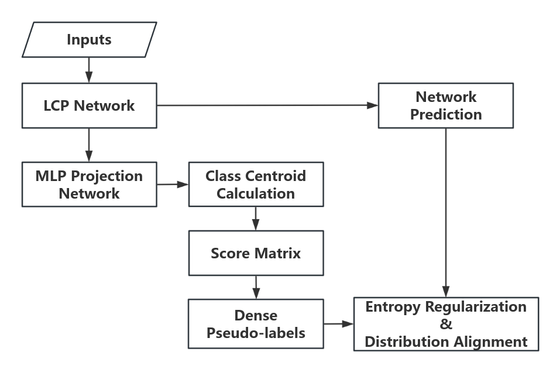

Semantic segmentation is a key technique to assign a semantic label to each individual point in a point cloud.
However, the large demand for supervised data and the difficulty of learning local features of point cloud are still unsolved problems.
To improve 3D point feature, inspired by the idea of transformer, we employ a so-call LCP network that extracts better feature by
investigating attentions between target 3D points and its corresponding local neighbors via local context propagation.
Training transformer-based network needs amount of training samples, which itself is a labor-intensive, costly and error-prone work, therefore, this work proposes
a weakly supervised framework, in particular, pseudo-labels are estimated based on the feature distances between unlabeled points and prototypes, which are calculated based on labeled data.
The methodology and workflow of our approach are illustrated in the figure below. We begin by feeding the point cloud into an LCP network to predict the initial semantic information of the point cloud.
Next, we employ a prototype pseudo-label generation strategy based on momentum to generate pseudo-labels for unlabeled points. These pseudo-labels, along with the predicted results, are optimized using a loss function.
